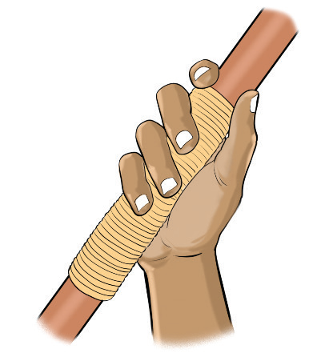
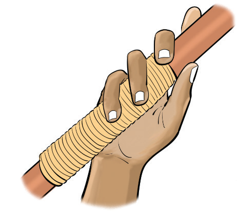
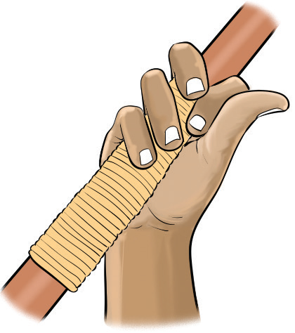

Figure 2.3: American grip
The Finnish grip
In this grip, the index finger is placed along the top of the javelin, and the thumb is underneath, creating a more secure grip. The remaining fingers are wrapped around the shaft, Figure 2.4. This grip is used when the javelin is raised slightly higher with the wrist cocked. The grip produces a more powerful throw by generating more wrist snaps and control during the release.

Figure 2.4: The Finnish grip
V-grip
The V-grip is a gripping technique where the thrower holds the javelin between the index and middle fingers, forming a ‘V’ shape, as shown in Figure 2.5. This grip provides a secure hold, allowing for better control and a balanced release, which helps to achieve greater distance.

Figure 2.5: V-grip
SPORTS STUDIES FORM TWO.indd 34
9/17/25 9:54 AM